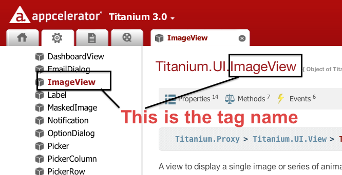

Alloy Overview
Titanium Certified Developer (TCD) Training
In this lesson, you will:
- Identify the role of the Alloy MVC components
- Implement a UI control using Views and Styles
- Enable interactivity with a Controller
- Identify options for handling platform differences in Alloy
 Topic
Topic
Alloy Overview
Overview & Goals
- MVC separates form and function
- Speed and simplify development
- Improve maintainability
- Alloy is Appcelerator's MVC-like framework for Titanium
Alloy MVC
- Views
- Styles
- Controllers
- Models
- Extras
View - index.xml
<Alloy>
<Window class="container">
<Label id="label" onClick="doClick">Hello, World</Label>
</Window>
</Alloy>
Alloy View != Ti.UI.View (that <div>-like thing). We're talking MVC view here.
Styles -- fugitives.tss
".container": {
backgroundColor: "white"
},
"Tab" : {
icon: '/images/fugitives.png',
},
"Window": {
backgroundColor:'transparent',
backgroundImage: 'images/grain.png',
title: 'Fugitives',
barColor: '#6d0a0c',
},
'#table' : {
backgroundColor: 'transparent'
} Controllers
function doClick(e) {
alert($.label.text);
}
$.index.open();
Models
exports.definition = {
config : {
"columns" : {
"name" : "string",
"captured" : "integer",
"url" : "string",
"capturedLat" : "real",
"capturedLong" : "real"
},
"adapter" : {
"type" : "sql",
"collection_name" : "fugitives"
}
},
...
}
Alloy App Walk-through
AlloyHunter
Adapted from https://github.com/aaronksaunders/alloy_fugitive
Convention over Configuration
| File/Directory | Contents & Purpose |
|---|---|
| /app/config.json | Specify global values, conditional environment and operating system values, and widget dependencies. |
| /app/views | XML View files |
| /app/styles | TSS Style files |
| /app/controllers | JavaScript Controller files |
| /app/models | JavaScript Model files |
| /app/migrations | JSON files that describe incremental changes in your database; in the format DATETIME_modelname.json |
| /app/assets | Graphic, data file, and other app assets; not created by default. |
| /app/lib | App-specific library files; not created by default. |
| /app/themes | Theme files and assets to customize your UI; not created by default. |
| /app/widgets | Files and assets associated with widgets (self-contained app components) |
Topic
Alloy Views & Styles in Detail
View tag

// view file
<Alloy>
<ImageView id='foo' src='foo.png'/>
</Alloy>
// style file
"#foo": {
height:Ti.UI.SIZE,
width: Ti.UI.SIZE
}
Require
Break up views into multiple files
<Alloy>
<TabGroup id='tabGroup'>
<!-- Tab included via <Require> tag -->
<Require type="view" src="fugitives" id="fugitivetab"/>
<!-- Tab included via <Require> tag -->
<Require type="view" src="captured" id="capturedtab" customVar="foo"/>
</TabGroup>
</Alloy>
Namespaces
Create elements not in the Ti.UI namespace:
// for objects not in Ti.UI namespace, such as Ti.Map.View:
<View ns="Ti.Map" id="map"/>
// for objects in sub-namespaces, such as Ti.UI.iOS.NavigationGroup:
<NavigationGroup platform="ios,mobileweb"/>
Style Files
- Component, class, and ID
- Global app.tss
- Constants
- i18n functions
- Alloy globals
".activeButton": {
backgroundColor:"blue"
},
"Button": {
width: Ti.UI.SIZE,
height: Ti.UI.SIZE,
color: "#000"
},
"#iosBtn": {
color: "#999",
systemButton: Titanium.UI.iPhone.SystemButton.DISCLOSURE,
title: L('iosbutton'),
left: Alloy.Globals.computedWidth
}
 Try it
Try it
Examine AlloyHunter Views & Styles
- Examine the View files used by the AlloyHunter app to identify the UI components that are being defined.
- Examine the Style files to correlate the components with their style selectors.
Topic
Controllers In Depth
Controllers
- Contain the application logic
- Communicate between Views and Models
- Handle user interaction and dynamic UI updates
- Access components via their id attribute:
$.idstring
Event Handling
/* listening for an event on a Ti object with id of 'button' */
$.button.addEventListener('click', function(e){
// do something
});
// firing an event
$.button.fireEvent('click', {foo: 'bar'});
// adding and removing an event
var listener = function() {
Ti.API.info("Event listener called.");
}
$.win.addEventListener('click', listener);
$.win.removeEventListener('click', listener);
Dynamically Creating Views
Alloy.createController -- factory method for instantiating a controller
Controller.getView -- return the view associated with this controller
// controller file something like index.js
// we're dynamically loading and showing some other view
var foo = Alloy.createController('foo').getView();
foo.open();
Dynamic Views Example
Using custom rows in a tableview
var rows = [];
// arr is some array of data to show in a table
for (var i = 0; i < arr.length; i++) {
var row = Alloy.createController('CustomRow', arr[i].toJSON()).getView();
rows.push(row);
}
// set the table
$.table.setData(rows);
Passing Arguments
Pass arguments when initializing a controller
var data[];
for (var i=0; i < source.length; i++) {
var arg = {
title: source[i].postTitle,
url: source[i].postLink
};
var row = Alloy.createController('row', arg).getView();
data.push(row);
}
$.tableView.setData(data);
<Alloy>
<TableViewRow id="rowView">
<Alloy>
var args = arguments[0] || {};
$.rowView.title = args.title || '';
$.rowView.url = args.url || '';
Try it
Examine AlloyHunter's Controllers
- Examine the Fugitives.js controller:
- the dynamically-created view in addNewFugitive()
- the event listener
- the arguments passed to the dynamic view within the listener
- Examine the FugitiveDetails.js controller:
- accessing the arguments
- and how that argument's data is used throughout
Topic
Platform Handling
Platform & Form Factor
- Conditional code
- App assets
- Platform Build-time Folders
- Markup-based Techniques
- TSS-based Qualifiers
Conditional Code
- OS_IOS, OS_ANDROID, OS_MOBILEWEB
- ENV_DEV, ENV_TEST, ENV_PRODUCTION
if (ENV_DEV && OS_IOS) {
alert("You are running iOS in the simulator");
}
Asset Folders

Platform Overrides

Platform and Device Markup
<Alloy>
<Window class="container">
<View formFactor="handheld">
<Label>I'm a handheld!</Label>
</View>
<View formFactor="tablet">
<Label>I'm a tablet!</Label>
</View>
<View height="50" width="200" bottom="10" backgroundColor="#cdcdcd">
<Label class="platformLbl" platform="android" formFactor="tablet">android tablet</Label>
<Label class="platformLbl" platform="android" formFactor="handheld">android handset</Label>
<Label class="platformLbl" platform="ios" formFactor="tablet">ios tablet</Label>
<Label class="platformLbl" platform="ios" formFactor="handheld">ios handset</Label>
</View>
</Window>
</Alloy>
TSS-based Qualifiers
"#mybutton[platform=android]" : {
height:'40dp',
},
"#mybutton[platform=ios]" : {
height:50,
},
"#osLabel[platform=ios size=tablet]": {
text: "iPad"
},
"#osLabel[platform=ios size=handheld]": {
text: "iPhone"
},
Configurations
// config.json file
{
"global": { "foo": 1},
"env:development": {},
"env:test": {},
"env:production": {},
"os:ios": { "foo": 2 },
"os:android": {},
"dependencies": {}
}
// in your code
alert(Alloy.CFG.foo); // value is 1 or 2 depending on OS
Themes
- Named collection of styles and assets
- Applied via setting in the config.json file (can be platform-specific)
- Theme settings override base styles and assets
- Overrides are made on an attribute by attribute basis, not whole files
app/
assets/
appicon.png
background.png
styles/
app.tss
index.tss
themes/
mytheme/
assets/
background.png
styles/
app.tss
green/
...
{
"global": {
"theme":"mytheme"
},
"env:development": {},
"env:test": {},
"env:production": {},
"os:ios": {
"theme":"green"
},
"os:android": {
"theme":"blue"
},
"dependencies": {}
}
Try it
Examine Platform handling in AlloyHunter
- Examine the conditional code in Fugitives.js and FugitiveDetails.js
- Examine platform selectors in FugitiveDetails.tss
- Compare the graphic assets for Android and iOS
Alloy vs. “Traditional”
- It's not all or nothing —
Ti.UI.createView()and its brethren still valid - API techniques used within the controllers, in helper libraries (network, database, etc.)
- Alloy is essentially a pre-compiler
- In the end, Alloy creates traditional code for you — check out the Resources folder!
Summary
In this lesson, you:
- Identified the role of the Alloy MVC components
- Implemented a UI control using Views and Styles
- Enabled interactivity with a Controller
- Identified options for handling platform differences in Alloy
Q&A
Lab Objectives
- Create an Alloy-based project
- Implement app functionality with Views, Styles, and Controllers
Solution Walkthrough